I wanted water that reads well and costs little. Not a physically based ocean, not FFT, not a spectrum simulation, just a toonish sea that moves convincingly, has foam where it should, and is cheap enough that it can sit under the rest of a scene. The plan was simple: a handful of Gerstner waves added together, a stylised shader with hard highlights, and a foam texture that reads its own previous frame so foam can linger and leave trails behind the crests.
This post walks through how each part works, with diagrams drawn from the actual code, and is honest about the bits that are rough. It's a personal project and I haven't profiled it yet, so "cheap" here means cheap by design, not a measured number.
The waves
One Gerstner wave
A plain sine wave only moves vertices up and down. A Gerstner wave also moves them sideways, so each point on the surface travels around a small loop as the wave passes. On the crest the points are pushed towards each other, on the trough they're pulled apart, and that's what gives Gerstner waves their sharper crests and flatter troughs.
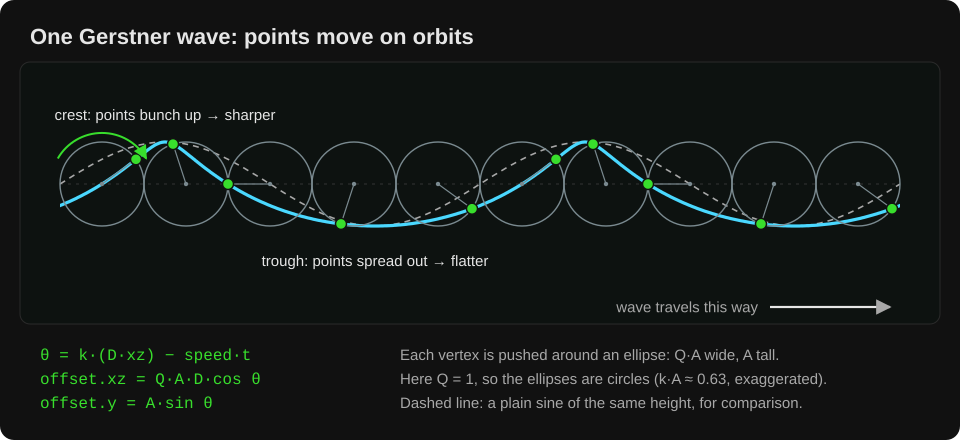
Every wave has a direction D, a frequency k (2π over the wavelength), an amplitude A, a speed and a steepness
Q. This is the function that evaluates one of them in the vertex shader:
void EvaluateGerstner(float3 worldPos, WaveData w, float time,
out float3 offset, out float3 tangent, out float3 bitangent)
{
float2 D = normalize(w.direction);
float k = w.frequency;
float A = w.amplitude;
float Q = w.steepness;
float phase = k * dot(D, worldPos.xz) - w.speed * time;
float s = sin(phase);
float c = cos(phase);
offset = float3(Q * A * D.x * c, A * s, Q * A * D.y * c);
float kA = k * A;
float qkA = Q * kA;
tangent = float3(1.0 - qkA * D.x * D.x * s, D.x * kA * c, -qkA * D.x * D.y * s);
bitangent = float3(-qkA * D.x * D.y * s, D.y * kA * c, 1.0 - qkA * D.y * D.y * s);
}
The height is A·sin of the phase, exactly like a sine wave. The sideways push is Q·A·cos of the phase along the
wave's direction. What decides the shape is the product Q·k·A. At 0 it's a plain sine. As it grows, the crest gets sharper, and at
exactly 1 the crest becomes a point. Above 1 the surface folds through itself and you get loops, which is the classic thing to avoid.
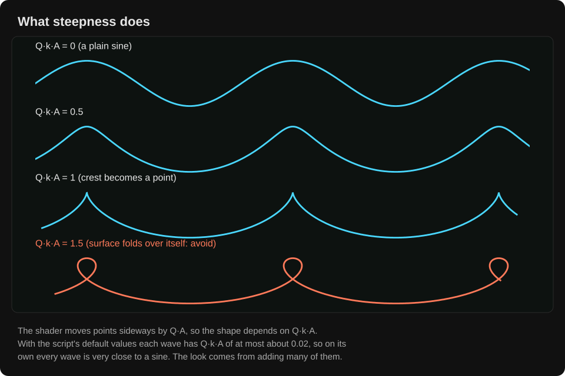
Adding them up
A single wave looks like a single wave, so the ocean is a sum of them. A small C# component, OceanWaveController, generates the wave list from a few
settings and uploads it to a structured buffer. The shader loops over that buffer for every vertex (up to 32 waves) and adds up the offsets.
With the script's default settings it makes 8 base waves. Their wavelengths go from about 60 m down to 4 m, following a power curve, with a small stable random variation so they don't line up. Amplitude falls off for the shorter waves. The directions are spread over 90° around the wind direction, with a bit of randomness. Each base wave is then written twice: once travelling with the wind at 60% of its amplitude, and once running the opposite way at 40% with a bit less steepness. Two equal waves running in opposite directions make a standing wave, so this pair partly stands still and partly travels, which breaks up the "everything marches one way" look. That gives 16 waves in the buffer.
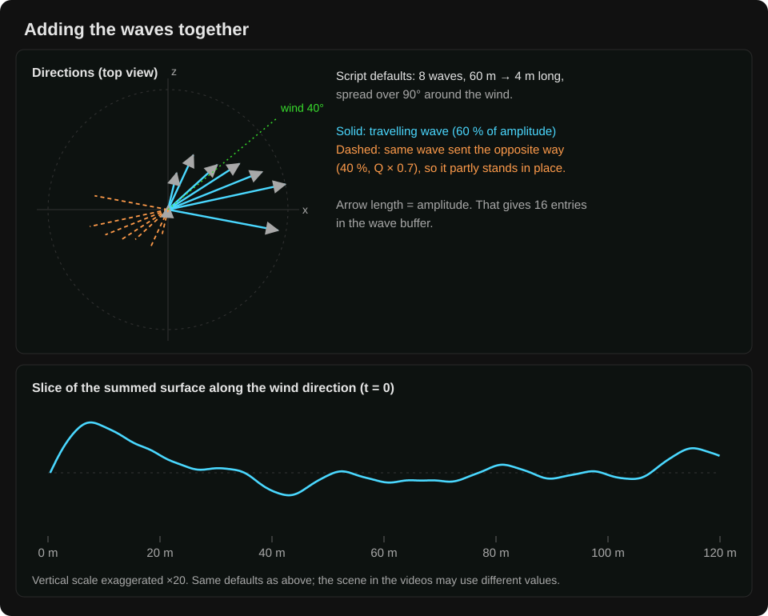
I should be honest about one thing here. With these defaults the steepness term is small: each wave's Q·k·A comes out at about
0.02 or less. At that level the sideways push barely shows and each wave is very close to a plain sine. So with default settings this is
effectively a sum of sines with a Gerstner formula, and the stylised look comes mostly from the shading and the foam rather than from sharp
crests. The steepness setting is there to push it further, and the shape is right when you do, but the defaults are gentle.
Normals for free
The same loop that moves the vertex also gives the normal. Each wave adds its own tilt to a tangent along x and a bitangent along z, and the normal is their cross product. No neighbouring vertices are sampled and nothing is baked.
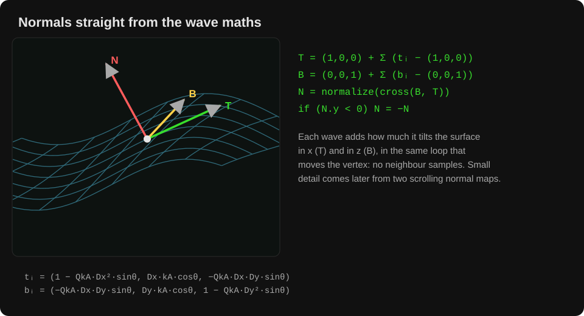
The mesh and the rings
The surface is built from one mesh: a flat plane of 129 × 129 vertices, so 128 × 128 quads, 16,641 vertices and 32,768 triangles. Everything else is the same tile reused at different scales.
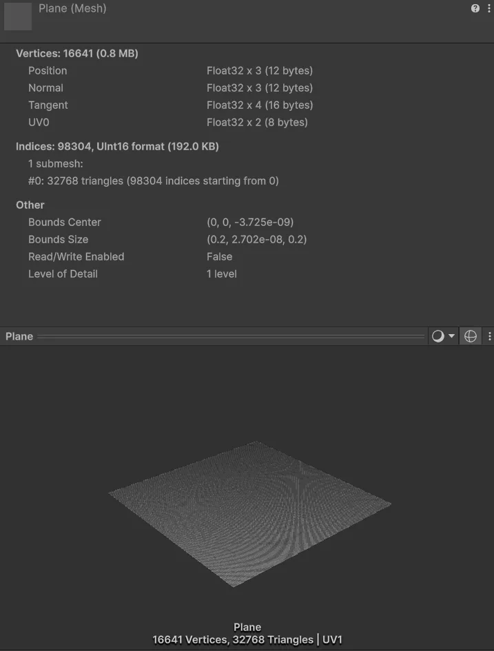
The tiles are laid out in rings. Each ring is 8 tiles around a hole one tile wide, and the next ring in is made of tiles three times smaller that exactly fill that hole. Repeat that a few times and you get a lot of vertices near the camera and progressively fewer further out, with every tile still being the same 129 × 129 mesh. Because every tile is the same mesh with a different position and scale, the rings can be drawn with instancing.
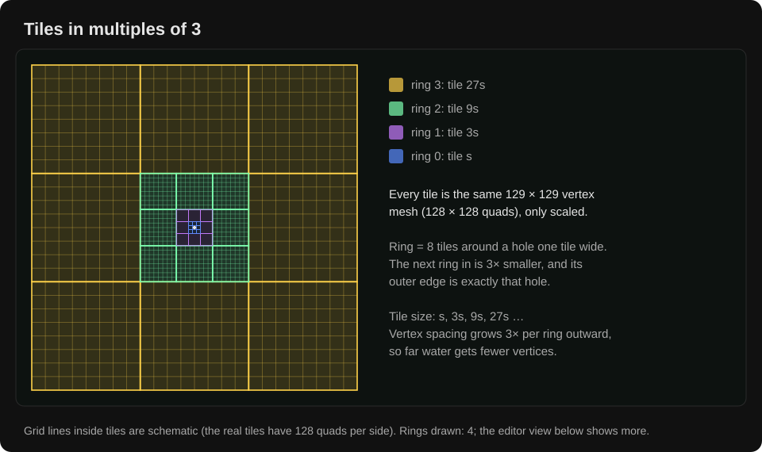
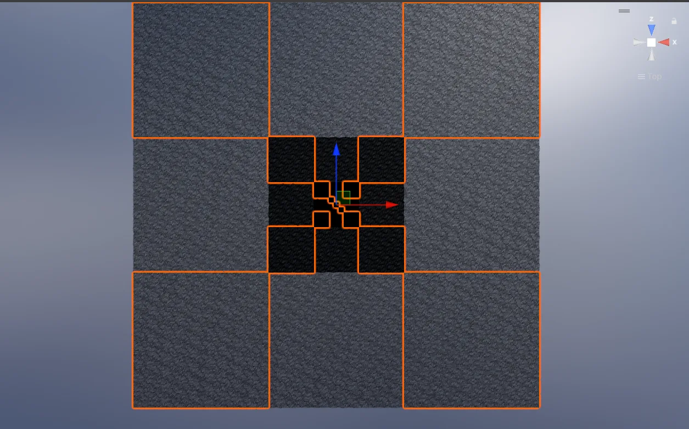
Since the waves are a function of world position, the displacement is continuous across tiles: wherever two tiles share a vertex, both move it to the same place. The catch is where a ring meets a finer ring. One edge of an outer tile lines up with three edges of the inner tiles, so the inner side has extra vertices in between that the outer side doesn't. Nothing in the code I'm showing here stitches those, so that boundary is a place where small cracks can show. I've listed it with the other limitations below.
Shading
The shader is unlit in the usual sense: there's no N·L diffuse term and no shadows. The shape reads from the highlights, the reflection, the rim and the foam. Each layer is a simple term added on top of the last:
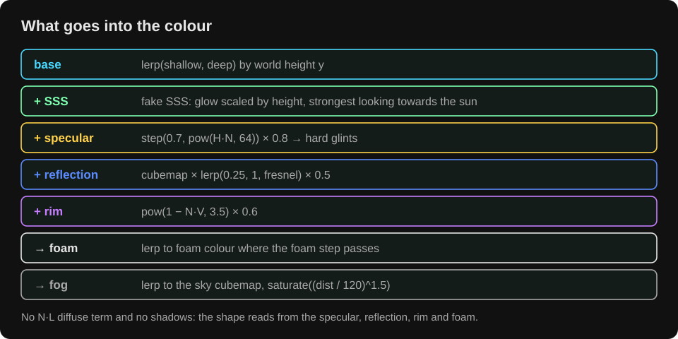
- Detail normals. Two scrolling samples of a normal map at different tilings are combined and added to the wave normal, so there’s small ripple detail between the big waves.
- Base colour. A blend from a shallow colour to a deep colour driven by the vertex’s world height, not by real water depth. Lower parts of the surface lean towards the deep colour.
- Fake subsurface. A green-cyan glow that is strongest when you look towards the light, scaled up with wave height, so crests catch more of it.
- Specular. A Blinn-Phong style highlight passed through a
step, so it’s either on or off. That gives the hard, cartoon glints instead of a soft sheen. - Reflection. A cubemap lookup weighted by a fresnel term, so it’s stronger at grazing angles.
- Rim. A fresnel-style rim colour. The detail normals fade out with distance before the rim is computed, so far away the rim follows the smoother wave normal.
- Foam and fog. Foam is blended over the colour (next section), and then the whole thing fades towards the cubemap colour with distance.
Foam trails
This is the part I enjoyed most. I wanted foam that appears where waves bunch up and then stays for a while, so a crest leaves a trail behind it as it moves. That needs memory between frames, so the foam lives in a render texture that reads and writes itself.
The feedback loop
FoamCaptureCamera creates two 1024 × 1024 single-channel (R16) render textures. Every frame, in LateUpdate, it runs one
Graphics.Blit from the current foam texture into the other one using the FoamBlit shader, then swaps them. The blit shader reads
last frame's foam, fades it, adds any new foam, and writes the result. The ocean material then gets the new texture and samples it when it shades.
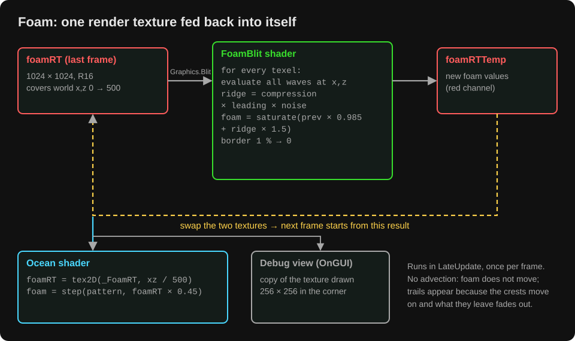
The texture covers a fixed square of the world: UV 0 to 1 maps to world x and z from 0 to 500 m (the capture size setting), so each texel is about half a metre. It doesn't follow the camera.
Where new foam comes from
For every texel, the blit shader evaluates all the waves at that texel's rest position, the same way the vertex shader does, and sums up the tangents and bitangents. From those it works out two things:
- Compression.
detis the 2D determinant of the summed tangent and bitangent in x and z. It measures how much the surface is squeezed sideways: 1 means not squeezed, lower means points are bunching up. Gerstner waves bunch up at the crests, so lowdetmeans “near a crest”. Below a threshold (0.45 by default) compression ramps up to 1. - Leading edge. The summed slope is compared with the direction of one chosen wave from the buffer. This biases foam towards the face of the wave that’s moving forward.
Their product, broken up with a scrolling noise texture, is the new foam for that texel:
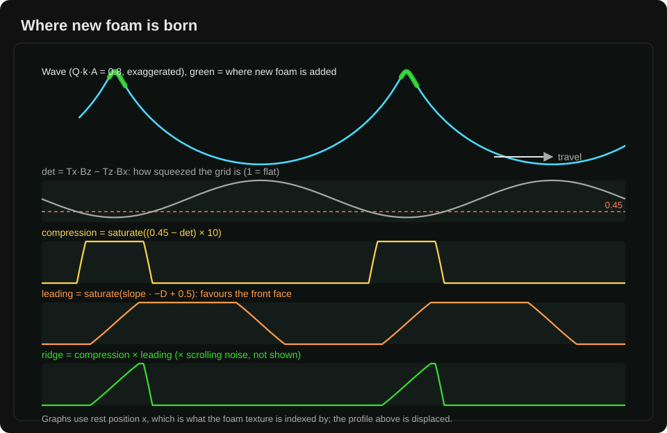
// rest position of this texel: uv 0..1 covers world x,z 0.._FoamCaptureSize
worldXYZ.xz = i.uv * _FoamCaptureSize;
// ... loop over all waves: sum tangents, bitangents and slopes (tan.y, bitan.y)
float leading = saturate(dot(totalSlope, -waveDir) * _LeadingBias + 0.5);
float det = totalTangent.x * totalBitangent.z - totalTangent.z * totalBitangent.x;
float compression = saturate((_SlopeThreshold - det) * 10.0);
float ridge = compression * leading * noise;
float prev = tex2D(_MainTex, i.uv).r * _Decay; // last frame's foam, faded
float foam = saturate(prev + ridge * _FoamAdd); // plus the new foamWhy it leaves trails
There's no advection: the foam texture never moves its contents. The trails come from the combination of two things. The crests move, so the place where new foam is added moves with them, and the old foam left behind fades a little each frame instead of disappearing. With the default decay of 0.985 per frame, foam drops to half strength after about 46 frames.
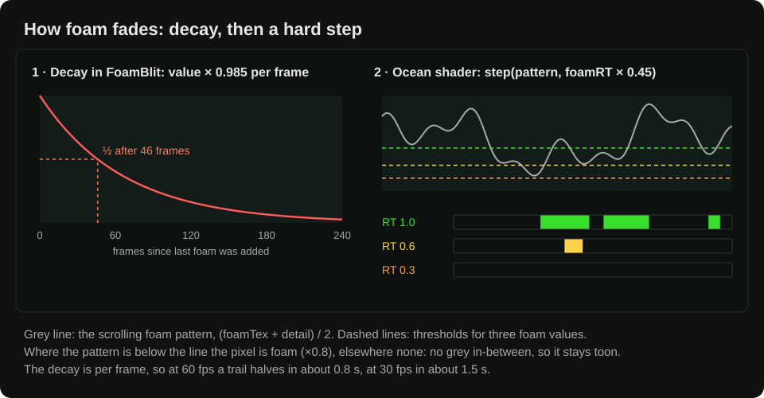
On the ocean side, the foam value isn't just used as a blend amount. The shader builds a pattern from two scrolling samples of a foam texture and only
shows foam where the stored value beats the pattern, using a step. Strong, fresh foam passes almost everywhere. As it fades, fewer parts of
the pattern pass, so a trail thins out and breaks into patches before it's gone. That keeps it hard-edged and cartoony instead of turning into a grey haze.
Two details worth knowing. The decay is per frame, not per second, so trails last longer at a lower frame rate: half-life is about 0.8 s at 60 fps and about 1.5 s at 30 fps. And the foam is computed at each point's rest position but looked up at the displaced position in the ocean shader, so the two are slightly offset. With gentle steepness that offset is small.
How it got here
It didn't start like this. The first version had no foam texture at all: just the waves and the shading, and it was a lot brighter and sparklier than what I ended up with.
The next step added the foam texture, but with a much simpler foam. It worked, but the foam came out as heavy, blotchy white over the faces of the waves instead of thin lines along the crests.
The current version uses the compression and leading-edge test above together with the stepped pattern in the ocean shader, which gives thinner, more graphic foam lines that break up as they fade.
What works, and what doesn’t
What I like about it:
- It’s small. One wave function, one tile mesh, one foam blit per frame. Easy to read and easy to change.
- Normals come for free from the same loop that moves the vertex.
- The foam has memory. A single feedback texture gives trails without any particles.
- The look is controllable. Hard specular, a stepped foam threshold and a few colours, so it’s easy to art-direct.
Where it falls short:
- Gentle by default. With the script’s default settings the waves are very close to a sum of sines, and by my maths the foam’s compression test wouldn’t trigger at all. The scene needs steeper settings than the defaults to get foam.
- Wave speeds aren’t physical. The generator computes
speed = sqrt(9.81 / k)and the shader uses it as the rate the phase changes, so crests move at speed / k. That makes long waves move very fast and short waves slowly, compared with real deep-water waves. It’s fine for a stylised look, but it’s not real dispersion. - Fixed foam area. The foam texture covers world 0 to 500 m in x and z and doesn’t follow the camera.
- No advection. Foam doesn’t drift with the water; it only fades where it was made.
- Frame-rate dependent foam. Decay is per frame, so trail length changes with frame rate.
- Ring seams. Where a ring meets a finer ring, the extra inner vertices aren’t stitched to the outer edge, so cracks are possible.
- No lighting response. No diffuse and no shadows, so it won’t sit naturally in a scene with strong lighting changes.
- Not profiled. I haven’t measured it, so I can’t give numbers yet.
Next steps
- Frame-rate independent decay, scaling the fade by delta time.
- A foam area that follows the camera, scrolling the texture as the centre moves.
- Advection, shifting the foam a little along the wave direction each frame so trails drift.
- Stitch the ring edges, snapping the in-between vertices on the finer side to the coarser edge.
- Physical phase speed as an option, using
sqrt(g·k)so wavelengths separate the way real waves do. - Profile it, especially the vertex loop and the foam blit, on the hardware I’d actually ship on.
Wrapping up
The goal was a toon ocean that's simple and cheap, and the core really is small: a sum of Gerstner waves, one mesh reused in rings, a handful of shading terms and a foam texture that remembers the last frame. The waves are closer to sines than the name suggests with the default settings, and the foam has some obvious rough edges, but the pieces fit together well and it's easy to push further.
It's a personal project, so I'll keep chipping at it when I have time, starting with the foam area and the decay. If you've built something similar or you spot something I've got wrong, I'd like to hear about it.